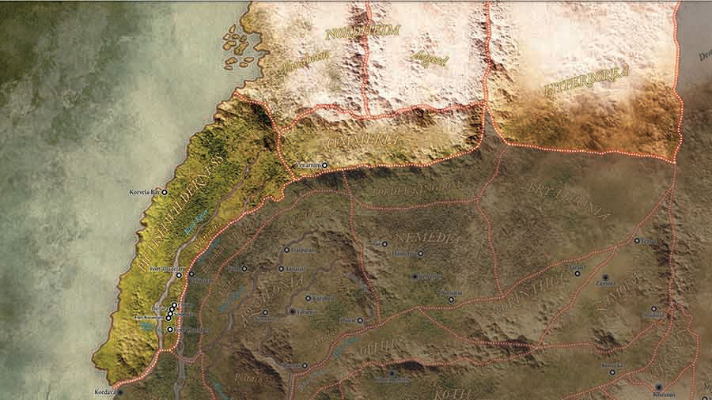
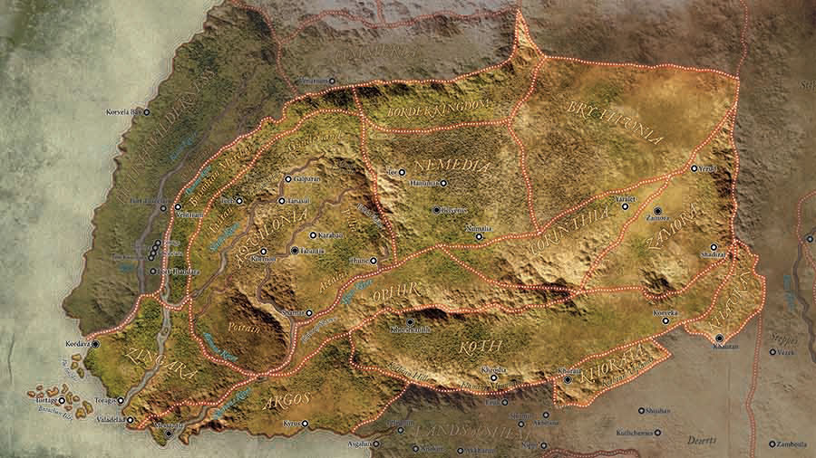
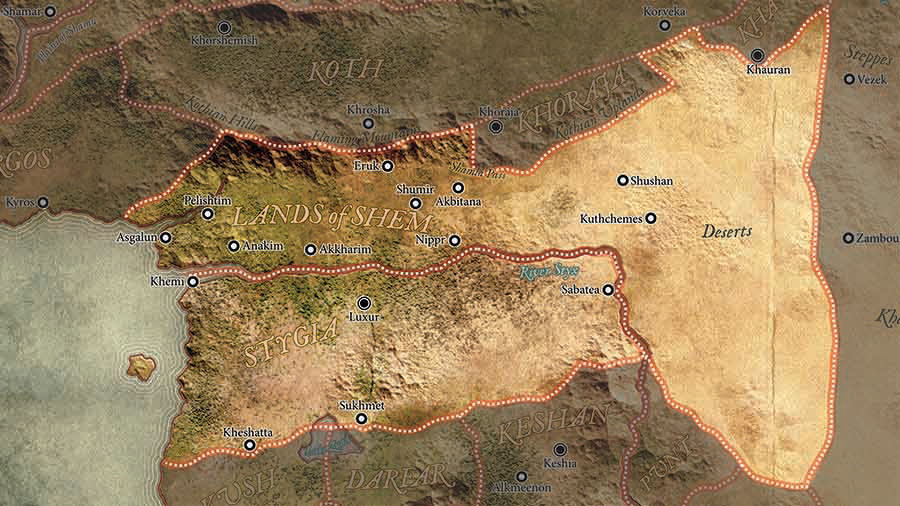
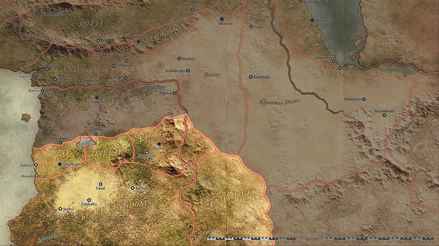
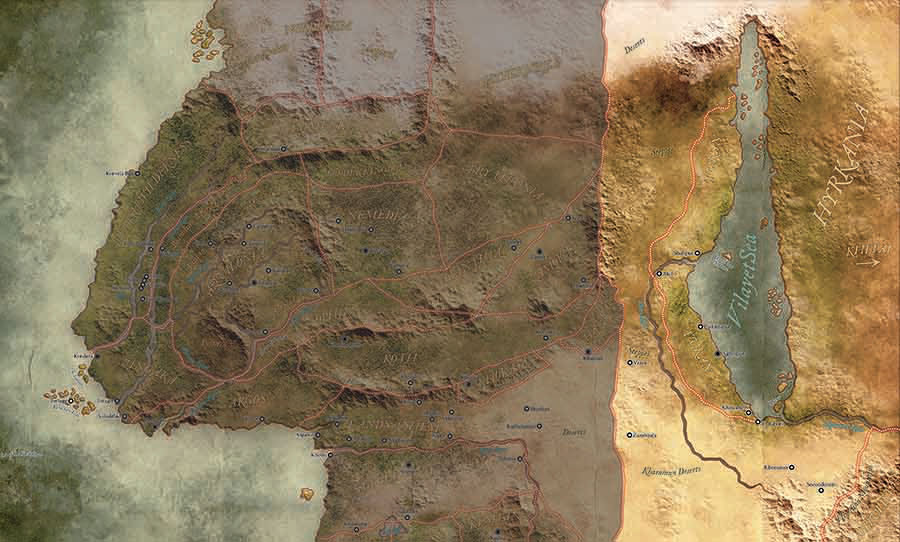

La Era Hiboria – El mundo de Conan
Sabed, oh príncipe, que entre los años en que los océanos se bebieron la Atlántida y sus relucientes ciudades, y los años del surgimiento de los Hijos de Aryas, hubo una Edad no soñada, en la que reinos brillantes se extendían por el mundo como mantos azules bajo las estrellas: Nemedia, Ophir, Brythunia, Hyperborea, Zamora con sus mujeres de pelo oscuro y sus torres de misterio embrujadas por las arañas, Zingara con su caballería, Koth que limitaba con las tierras de pastoreo de Shem, Estigia con sus tumbas vigiladas por las sombras, Hyrkania, cuyos jinetes llevaban acero y seda y oro. Pero el reino más orgulloso del mundo era Aquilonia, que reinaba en el soñado oeste. Hasta allí llegó Conan, el cimmerio, de pelo negro, ojos hoscos, espada en mano, ladrón, segador, asesino, con gigantescas melancolías y gigantescas alegrías, para hollar los tronos enjoyados de la Tierra bajo sus pies de sandalia.
Robert E. Howard - “El Fénix en la Espada”.
R. E. Howard, no sólo redactó el ensayo La Edad Hiboria sino que dibujó mapas relativamente precisos del continente durante esta Era, basándose en las zonas geográficas que más tarde, según el curso histórico ficticio de una serie de cataclismos, iban a convertirse en el así llamado «Viejo Mundo», es decir, nuestro Mundo Antiguo. Al continente lo llamó Thuria, aunque también se lo conoce como Hiboria por la Edad en la que transcurre.
El Noroeste
En el extremo noroeste se encuentra Nordheim, una región formada por dos reinos, Vanaheim y Asgard. Justo al sur de Nordheim se encuentra Cimmeria, tierra natal de Conan, y al este de Asgard el reino de Hiperbórea (reino lejanamente emparentado con los reinos hiborios y a veces considerado como el primero de ellos). Al Suroeste de Vanaheim, bordeando la costa, se encuentran las Tierras Pictas (también llamadas en ocasiones «Yermos Pictos»).
Reinos Hiborios
Los Reinos Hiborios son una colección de reinos, naciones y ciudades-estado que conforman una parte significativa del escenario en las historias de Conan el Bárbaro. Estos reinos comparten características culturales y geográficas similares y están ubicados en el centro del mapa. Ellos son:
Shem y Estigia
Shem y Estigia no son reinos hiborios propiamente dichos sino territorios intermedios situados entre los reinos hiborios del norte de Thuria y los reinos negros del suroeste del continente. Ambos países están separados por un largo río que fluye de este a oeste, el Styx, que toma su nombre de la mitología griega, pero que se inspira en el Nilo.
Shem es un territorio habitado por tribus nómadas, correspondientes a los antiguos hebreos y a otros pueblos del antiguo Oriente Medio.
Estigia, a su vez, se inspira claramente en el Antiguo Egipto.
Reinos Negros
Los Reinos Negros son la designación genérica de las tierras habitadas por poblaciones de raza negra y se corresponden con lo que sería África. El más grande de todos es Zembabwei (cuyo nombre evoca a Zimbabue), no obstante hubo otros de importancia considerable.
El Oriente
Los Reinos del Oriente suelen hacer referencia a una región vasta y exótica ubicada al este de los Reinos Hiborios y que se encuentra en el otro extremo del continente thurio. Estos reinos orientales, aunque no se describen en detalle en las historias originales de Conan, a menudo se asocian con un ambiente exótico, misterioso y lejano. Algunos de ellos son: